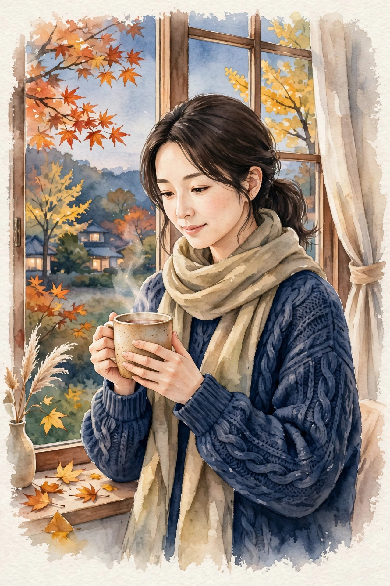
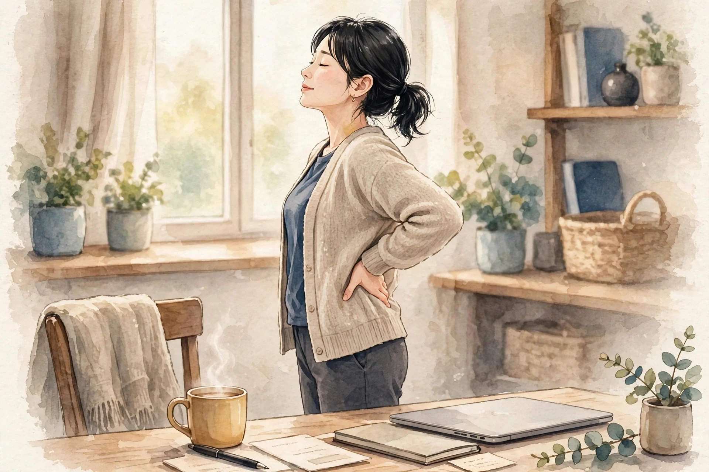

女性専用 ／ オイルマッサージ × 美容整体
一日の終わりに、
肩と心をほどく場所を、
新宿に。
近日開院予定（受付は開始次第、このサイトとLINE公式でお知らせします）
美容整体ステラ・リゲルは、東京・新宿エリアで開院準備中の女性専用サロンです。仕事帰りの夕方から夜にかけて、オイルマッサージと美容整体で、肩こりや首の重さ、姿勢の崩れといった日々のお悩みに寄り添います。
- 女性専用 女性のお客様のみご利用いただけます
- 90分 10,000円 分かりやすい単一価格です
- 月〜土 17:00〜22:00（予定） お仕事帰りに立ち寄れる時間帯です

こんなお悩みはありませんか
当てはまるものが多いほど、毎日の姿勢や過ごし方に負担が積み重なっているサインかもしれません。まずはチェックしてみてください。
- 夕方になると肩が重く、手で揉みたくなる
- スマートフォンを見る時間が長く、首が前に出ている気がする
- デスクワークで背中が丸まり、姿勢が気になる
- 脚のむくみが気になり、靴がきつく感じる日がある
- 頭が重く感じて、すっきりしない日が続いている
- 冷えが気になり、手足が冷たいことが多い
- 眠りが浅く、朝起きても疲れが残っている感じがする
- 顔のむくみや、フェイスラインのもたつきが気になる
お悩みごとの詳しい解説とセルフケアは、でご紹介しています。
施術の様子
リゲルの施術は、オイルマッサージと美容整体を組み合わせた90分です。当日のお体の状態をお聞きしながら、力加減や重点的にほぐす部位を調整します。
01
カウンセリング
その日のお悩みや体調、気になる部位をお聞きします。姿勢の様子も一緒に確認し、施術の進め方をご相談します。
02
オイルマッサージ
オイルを使って背中・肩・脚などを流れるようにほぐします。こわばりやすい肩や首まわりは、様子を見ながら丁寧に圧を調整します。
03
美容整体
骨盤や背骨まわりのバランスに目を向けながら、姿勢が整いやすい状態を目指します。無理に強い力を加える施術は行いません。
※ 当サロンでは鍼灸は行いません。施術は医療行為ではなく、リラクゼーションと美容を目的としたものです。
料金・営業案内
料金はシンプルな単一価格です。コース選びで迷うことなく、当日のお悩みに合わせて内容を組み立てます。
90分 ／ 10,000円（税込）
近日開院予定（受付は開始次第、このサイトとLINE公式でお知らせします）- ・ 料金は90分10,000円の単一価格です
- ・ 担当セラピストは開院時にご案内します
- ・ お問い合わせ用LINE公式アカウントを開設しました
| 店名 | 美容整体ステラ・リゲル |
|---|---|
| 場所 | 東京・新宿エリアで開院準備中（施設・住所は決まり次第ご案内します） |
| 対象 | 女性専用 |
| 施術内容 | オイルマッサージ、美容整体（鍼灸は行いません） |
| 料金 | 90分 10,000円（単一価格） |
| 営業時間（予定） | 月〜土 17:00〜22:00 ／ 日曜休み（いずれも予定です） |
| 予約受付 | 近日開院予定のため、現在は受付を行っていません。受付は開始次第、このサイトとLINE公式でお知らせします |
| お問い合わせ | お問い合わせ用LINE公式アカウントを開設しました |
姉妹店のご案内
ステラシリーズは、星の名前を冠した女性専用サロンです。営業中の姉妹店は各店のサイトでご案内しています。
営業中の姉妹店
開院準備中の姉妹店
- 美容整体ステラ・リゲル（東京）開院準備中
このサイトです - 美容整体ステラ・カペラ（名古屋）開院準備中
- 美容整体ステラ・アンタレス（福岡）開院準備中
- 美容整体ステラ・デネブ（札幌）開院準備中
- 美容整体ステラ・プロキオン（横浜）開院準備中
- 美容整体ステラ・アルデバラン（仙台）開院準備中
- 美容整体ステラ・レグルス（広島）開院準備中
- 美容整体ステラ・ベテルギウス（大宮）開院準備中
開院のお知らせについて
美容整体ステラ・リゲルは近日開院予定です。開院日と受付の開始は、このサイトとLINE公式でお知らせします。お問い合わせ用LINE公式アカウントを開設しました。開院まで、でセルフケアの読み物をお届けします。
セラピストとして働くことに興味のある方は、をご覧ください。
LINE公式アカウントでお問い合わせ
開院・受付開始のお知らせもLINEでお届けします
お悩み別ページ
気になるお悩みを選ぶと、要因の整理・セルフケア・受診の目安をまとめた解説ページをご覧いただけます。解説は一般的な情報であり、診断や治療を行うものではありません。
肩こり
夕方に重くなる肩、揉んでも戻ってしまう張り。デスクワークや姿勢との関わり、毎日のセルフケアの組み立て方を解説します。
首こり
スマートフォンやパソコンで前に出た頭を支える首の負担。首まわりの仕組みと、無理のないほぐし方・整え方を解説します。
腰の重さ・腰痛
夕方に重くなる腰、立ち上がりにくい腰。座り姿勢や骨盤の傾きなど要因を整理し、膝抱えストレッチなど毎日のセルフケアを解説します。
眼精疲労・目の疲れ
夕方にぼやける画面、重い目元。ピント調節の負担や乾燥、姿勢など要因を整理し、蒸しタオルや遠くを見る休憩など毎日のセルフケアを解説します。
姿勢・猫背が気になる
気づくと丸くなる背中、前に出る頭。重心線の考え方など猫背の仕組みを整理し、胸を開くストレッチや壁立ちチェックなどセルフケアを解説します。
寝つき・眠りの浅さ
布団に入っても眠れない、夜中に目が覚める。体内時計と深部体温の仕組みを整理し、安眠・神門など眠りのツボや入浴の工夫などセルフケアを解説します。
脚のむくみ・だるさ
夕方に靴がきつくなる脚の張り。座りっぱなしや冷えなど要因を整理し、ふくらはぎを動かす運動や脚を高くする休め方など毎日のセルフケアを解説します。
冷えが気になる
夏でも冷たい手足、冷房で冷え切る足先。巡りと筋肉量、冷房環境など要因を整理し、足湯や湯船など毎日のセルフケアを解説します。
頭の重さ・すっきり感
夕方に重くなる頭、こめかみの締めつけ感。首・肩の張りや気圧の変化など要因を整理し、こめかみをほぐすセルフケアや受診の目安を解説します。
体のだるさ
朝から重い体、抜けないだるさ。睡眠の質や巡りの滞りなど要因を整理し、湯船や軽い運動などのセルフケアや受診の目安を解説します。
よくある質問
開院前にいただくことの多いご質問をまとめました。受付に関する最新情報は、このサイトでお知らせします。
いつ開院しますか
近日開院予定です。具体的な開院日は決まり次第、このサイトとLINE公式でお知らせします。現在は予約の受付を行っていません。
場所はどこですか
東京・新宿エリアで開院準備中です。施設と住所は確定次第ご案内します。それまでの間、所在地に関する個別のお問い合わせにはお答えできない場合があります。
女性専用ですか
はい、女性のお客様専用のサロンです。
料金はいくらですか
オイルマッサージと美容整体を組み合わせた90分コースが10,000円の単一価格です。時間や部位によって料金が変わることはありません。
どんな施術ですか。鍼は使いますか
オイルを使ったマッサージと、姿勢のバランスに目を向ける美容整体を組み合わせた施術です。鍼灸は行いません。また、施術は医療行為ではなく、病気の診断や治療を目的としたものではありません。
営業時間を教えてください
月〜土の17:00〜22:00、日曜休みを予定しています。開院時に改めて確定した時間をご案内します。
担当のセラピストは分かりますか
担当セラピストは開院時にご案内します。当サロンは業務委託スタッフ主体の運営のため、個人プロフィールは掲載していません。
予約や問い合わせはどうすればいいですか
受付は開始次第、このサイトとLINE公式でお知らせします。お問い合わせ用LINE公式アカウントを開設しました。下のボタンから友だち追加してお問い合わせください。
妊娠中でも施術を受けられますか
体調や時期によって対応が異なります。開院後の受付開始時に、あらためてご案内します。ご不安な場合は、かかりつけ医への確認をおすすめします。
痛い施術ですか
力加減はお声を聞きながら調整します。無理に強い力を加える進め方はしませんので、施術中も遠慮なくお伝えください。
経絡・経穴ガイド
東洋医学で体のエネルギーの通り道とされる「経絡」と、その上にある要所「経穴（ツボ）」の基礎知識です。当サロンの施術では鍼は使いませんが、経穴の位置を目安に、手や指でやさしく圧をかけるアプローチを取り入れています。ここでの説明は伝統的な考え方の紹介であり、特定の症状への効果を保証するものではありません。
経絡とは
経絡は、東洋医学の古典に基づく考え方で、全身を巡る流れの道筋を指します。正経と呼ばれる主要な経絡は12本あり、それぞれ内臓の働きと結びつけて考えられてきました。経穴は経絡上に点在する要所で、古典では360以上が知られています。現代では、経穴の位置は骨や筋肉の目印からの距離で表す方法が広く使われています。
施術でよく触れる経穴
| 肩井（けんせい） | 肩の稜線のほぼ中央、首の付け根と肩先の中間あたりにある経穴。肩まわりの施術で目安にする代表的な点です。強く押しすぎず、呼吸に合わせてやさしく圧をかけます。 |
|---|---|
| 天柱（てんちゅう） | 首の後ろ、髪の生え際の高さで、太い筋肉の外側のくぼみにある経穴。首の後ろ側をほぐす際の目安になります。 |
| 風池（ふうち） | 後頭部の下、耳の後ろの骨と首の筋肉の間のくぼみにある経穴。天柱よりやや外側に位置します。頭を支えるように、指の腹で包むように触れます。 |
| 合谷（ごうこく） | 手の甲側、親指と人差し指の骨が合う部分のやや人差し指寄りのくぼみにある経穴。手軽に触れられるため、セルフケアでも使われることが多い点です。 |
| 曲池（きょくち） | 肘を曲げたときにできるしわの、外側の端にある経穴。腕まわりの施術の目安になります。 |
| 足三里（あしさんり） | 膝のお皿の下、外側のくぼみから指幅4本ほど下にある経穴。脚の施術でよく知られる点の一つです。 |
| 三陰交（さんいんこう） | 内くるぶしの頂点から指幅4本ほど上、すねの骨の後ろ際にある経穴。脚の内側のラインをたどる際の目安です。 |
| 湧泉（ゆうせん） | 足の裏、指を曲げたときにくぼむ部分にある経穴。足裏へのアプローチの目安になります。 |
ご自宅で経穴に触れるときの注意
- 押す力は「気持ちよい」と感じる程度までにとどめ、痛みを我慢して強く押さないでください。
- 1か所につき、ゆっくり呼吸しながら5秒ほど圧をかけ、数回繰り返すくらいが目安です。
- 皮膚に傷や炎症がある場所、体調がすぐれないときは避けてください。
- しびれや強い痛みなど気になる症状がある場合は、セルフケアで様子を見続けず、医療機関に相談してください。
※ 経穴の位置は体の目印からの目安です。個人差があるため、位置の感じ方には幅があります。
セラピスト募集
美容整体ステラ・リゲル（東京・新宿エリア）では、開院に向けて業務委託のセラピストを募集しています。夕方から夜の時間帯を中心に、あなたのペースで働ける形を一緒に作っていきましょう。
| 雇用形態 | 業務委託 |
|---|---|
| 報酬 | 施術料の60％ |
| 勤務地 | 東京・新宿エリア（施設は開院準備中です） |
| 働く時間 | 月〜土 17:00〜22:00（予定）の範囲で、希望に合わせて設定できます |
| 対象 | 女性セラピストを募集しています（女性専用サロンのため） |
未経験者は研修無料
未経験の方も歓迎します。施術の基礎から学べる研修を無料でご用意していますので、安心してスタートできます。
経験者は技術をそのままメニューに
経験者の方は、お持ちの技術をそのままメニュー化できます。これまで磨いてきた手技を、そのままお客様に届けてください。
時間は希望に合わせて
働く時間は希望に合わせて設定できます。週に数日だけ、夜の数時間だけといった働き方もご相談ください。
Stella Rigel — Beauty Seitai Salon for Women
Stella Rigel is a women-only salon preparing to open in the Shinjuku area of Tokyo, Japan. We combine oil massage with beauty seitai (a Japanese body-balancing treatment) in a single, simple 90-minute session.
| Salon | Beauty Seitai Stella Rigel — women only |
|---|---|
| Location | Shinjuku area, Tokyo (preparing to open; address to be announced) |
| Treatment | Oil massage and beauty seitai. We do not offer acupuncture. Treatments are for relaxation and beauty care, and are not medical treatment. |
| Price | 90 minutes — ¥10,000 (single flat rate, tax included) |
| Hours (planned) | Monday to Saturday, 5:00 p.m. – 10:00 p.m. Closed on Sundays (planned) |
| Therapists | Our therapists will be introduced when the salon opens. |
| Contact | Our official LINE account for inquiries is now open. Please add us as a friend using the button below to contact us. |
About the treatment
Each session begins with a short consultation about how your body feels that day — stiff shoulders, a heavy neck, tired legs, or posture concerns. The oil massage works over the back, shoulders and legs with pressure adjusted to your comfort, and the beauty seitai part focuses on the balance around the pelvis and spine, aiming for a posture that feels naturally upright. Strong, painful techniques are not used.
Sister salons
Stella Rigel is part of the Stella series of women-only salons, each named after a star. Our sister salons in Umeda (Osaka), Sannomiya (Kobe), Namba (Osaka), Ashiya and Kyoto are already open, and further salons — including Rigel in Tokyo — are in preparation in Nagoya, Fukuoka, Sapporo, Yokohama, Sendai, Hiroshima and Omiya.
ブログ・コラム
お悩み別の解説ページと、季節に合わせたセルフケアのコラムをお届けします。開院に向けて、少しずつ記事を増やしていきます。
-

コラム ／ 季節のセルフケア朝晩の冷え込みが増える晩秋は、肩まわりの張りや手足の冷たさを感じやすい時期です。温める工夫と、無理なく続けられるセルフケアをご紹介します。
-
 お悩み別 ／ 肩こり
お悩み別 ／ 肩こりデスクワークや姿勢と関わる肩の張りを、要因ごとに整理しました。毎日のセルフケアと、受診を考える目安もまとめています。
-
 お悩み別 ／ 首こり
お悩み別 ／ 首こり前に出た頭を支える首の負担を、姿勢の観点から整理しました。画面との付き合い方や、首まわりのセルフケアをご紹介します。
-
 お悩み別 ／ 冷え
お悩み別 ／ 冷え冷房と座り仕事のある新宿で冷えを感じやすくなる要因を整理しました。毎日のセルフケアと受診の目安もまとめています。
-

お悩み別 ／ 腰の重さ・腰痛デスクワークで重くなりやすい腰の要因を、座り姿勢・骨盤・冷えの面から整理しました。毎日のセルフケアと受診の目安もまとめています。
-
 お悩み別 ／ 眼精疲労・目の疲れ
お悩み別 ／ 眼精疲労・目の疲れデスクワークの長い新宿で目の疲れを感じやすくなる要因を整理しました。職場と自宅でできるセルフケアと受診の目安もまとめています。
-
 お悩み別 ／ 脚のむくみ
お悩み別 ／ 脚のむくみデスクワークの長い新宿で脚のむくみを感じやすくなる要因を整理しました。毎日のセルフケアと受診の目安もまとめています。
-
 お悩み別 ／ 頭痛・頭の重さ
お悩み別 ／ 頭痛・頭の重さデスクワークで夕方に頭が重くなる方へ、首・肩のこわばりや気圧など要因の整理と、こめかみほぐしなどのセルフケア、受診の目安をまとめました。
-
 お悩み別 ／ 体のだるさ
お悩み別 ／ 体のだるさ忙しい毎日で体のだるさが抜けない方へ、睡眠や運動量など要因の整理と、湯船・軽い運動などのセルフケア、受診の目安をまとめました。
-
 お悩み別 ／ 姿勢・猫背
お悩み別 ／ 姿勢・猫背デスクワークで背中が丸くなりやすい方へ、重心線の考え方に基づく猫背の仕組みの整理と、胸を開くストレッチなどのセルフケア、受診の目安をまとめました。
-
 お悩み別 ／ 寝つき・眠りの浅さ
お悩み別 ／ 寝つき・眠りの浅さ寝つきの悪さや眠りの浅さが気になる方へ、体内時計と深部体温の仕組みの整理と、安眠・神門などのツボ押しや入浴の工夫といったセルフケア、受診の目安をまとめました。
開院のお知らせや新しい記事は、このページとサイトのトップでご案内します。
サイトマップ
美容整体ステラ・リゲルのサイト内のページ一覧です。
サイト内のページ
記事ページ
姉妹店（外部サイト）
新宿で気になる肩こり ── 要因の整理と、毎日のセルフケア
「夕方になると肩が重い」「自分で揉んでみても、すぐに戻ってしまう」「肩だけでなく、背中や首まで張ってくる」。新宿で働く方から多く聞かれるのが、こうした肩まわりのお悩みです。肩こりは病名ではなく、肩から首、背中にかけての張りや重さ、だるさをまとめて表す言葉です。感じ方には個人差が大きく、検査で大きな異常が見つからないことも珍しくありません。だからこそ、まずは「なぜ張りやすいのか」を整理し、日常の中で負担を減らす工夫と、専門的なケアを使い分けることが大切になります。このページでは、肩こりの要因を一つずつ整理し、ご自宅でできるセルフケア、そして医療機関への受診を考える目安をまとめました。
肩の張りは、どこから来るのか
肩まわりには、僧帽筋をはじめとする複数の筋肉が重なり合っています。頭の重さはおよそ5〜6キログラムと言われ、その頭を首と肩で支え続けるだけでも、筋肉には小さな負担が積み重なります。筋肉が緊張した状態が長く続くと、まわりの血の巡りが滞りやすくなり、重さや張りとして感じやすくなると考えられています。張りを感じる場所は人によって異なり、肩の稜線の中央あたりが気になる方もいれば、肩甲骨の内側が詰まるように感じる方、首筋から肩先まで広い範囲でだるさを覚える方もいます。ご自身が「どこが、どんなときに気になるか」を把握しておくと、セルフケアや施術のときに重点を置く場所が定めやすくなります。
要因の整理：肩が張りやすくなる5つの背景
1. 同じ姿勢が長いこと
デスクワークやスマートフォンの操作では、腕を前に出した姿勢が続きます。この姿勢では肩が内側に巻き込みやすく、肩甲骨が外へ開いたまま固定されがちです。筋肉は、動かしているときよりも「同じ長さで力を入れ続ける」ときに疲労を感じやすい性質があります。1時間に一度は席を立つなど、姿勢を変えるきっかけを作ることが、負担をため込まない第一歩です。
2. 姿勢の崩れと体の使い方
背中が丸まった姿勢では、頭の位置が体の中心より前にずれ、首や肩の後ろ側の筋肉が引き伸ばされながら頭を支えることになります。骨盤の傾きや座り方の癖も、背中から肩への負担の伝わり方に関わります。姿勢は「良い形を保ち続ける」ことよりも、「崩れたら戻す」「長時間同じ形にしない」ことが現実的で続けやすい考え方です。
3. 目や画面との関わり
画面を長く見つめる作業では、目のまわりの緊張とともに、無意識に顔が画面へ近づき、首や肩に力が入りやすくなります。画面の高さや距離、文字の大きさといった作業環境の調整は、肩の負担を減らすうえでも見直したいポイントです。在宅勤務でノートパソコンを低い位置で使い続けている方は、特に意識してみてください。
4. 冷え
冷房の効いた室内や、薄着で過ごす時間が長いと、肩まわりが冷えて筋肉がこわばりやすくなります。夏場でも、電車やオフィスの冷房で首や肩が冷えている方は少なくありません。羽織りものやスカーフで首元を覆うだけでも、体感は変わりやすくなります。帰宅後の入浴で肩まで温まることも、日常でできる大切なケアです。
5. 睡眠と心身の緊張
忙しい日が続いたり、緊張する場面が多かったりすると、眠っている間も肩に力が入ったままになり、朝から張りを感じることがあります。枕の高さが合っていない場合にも、首から肩にかけて負担がかかりやすくなります。肩の張りは体の状態だけでなく、その日の過ごし方全体を映すサインでもあります。張りが強い日は、無理をせず休息を優先することもケアの一つです。
当サロンでのアプローチ
ステラ・リゲルでは、オイルマッサージで背中から肩、首まわりを流れるようにほぐし、肩甲骨まわりにも丁寧にアプローチします。力加減はお声を聞きながら調整し、強く押すことだけを目的にはしません。美容整体では、骨盤や背骨まわりのバランスに目を向け、肩に負担が集まりにくい姿勢を目指します。施術の目的は、その場で「軽くなった」と感じられる心地よさと、日常に戻ったあとも姿勢を意識しやすくなる状態づくりです。なお、当サロンの施術は医療行為ではなく、肩こりの原因となる病気の診断や治療を行うものではありません。気になる症状が続く場合は、医療機関での相談とあわせてご利用ください。
ご自宅でできるセルフケア
肩回しと肩の上げ下げ
両肩を耳に近づけるようにすくめて3秒保ち、ストンと力を抜いて下ろします。これを5回ほど繰り返したあと、肘で大きな円を描くように肩を前回し・後ろ回しに各5回ずつ動かします。勢いをつけず、呼吸を止めないことがポイントです。デスクワークの合間に取り入れると、ため込んだ緊張を小分けにほぐせます。
胸を開くストレッチ
背筋を伸ばして両手を背中の後ろで組み、肩甲骨を寄せるようにしながら、組んだ手を斜め下へ伸ばします。胸の前側が心地よく伸びる位置で15〜20秒保ちます。肩が内側に巻き込みやすい方は、肩そのものだけでなく、胸側の筋肉の縮こまりにも目を向けると、姿勢が戻しやすくなります。痛みが出るほど無理に伸ばさないでください。
温める工夫
帰宅後は、シャワーだけで済ませず湯船に浸かって肩まで温まることをおすすめします。時間がない日は、蒸しタオルを首の付け根から肩にかけて数分当てるだけでも、こわばりがゆるむ感覚を得やすくなります。冷房で冷えた日は特に、首元を冷やさない服装を心がけてください。
作業環境の見直し
椅子に深く腰かけ、足裏全体が床につく高さに調整します。画面は目線がやや下がる程度の高さに置き、キーボードに手を置いたときに肘が自然に曲がる位置を目安にしてください。小さな調整の積み重ねが、一日の終わりの肩の重さを変えていきます。
タオルを使った肩甲骨寄せ
椅子に浅めに座り、背筋を伸ばします。フェイスタオルの両端を持って腕を前に伸ばし、息を吐きながら、肘を後ろへ引いて肩甲骨を背中の中央へ寄せるように動かします。胸が軽く開く位置で3秒保ち、ゆっくり戻します。これを8回ほど繰り返すと、丸まりやすい背中の姿勢をリセットする助けになります。肩に痛みがあるときは、動かす範囲を小さくして行ってください。強く引っ張る運動ではないため、仕事の合間の短い時間にも取り入れやすい方法です。
セルフケアを続けるコツ
セルフケアは、一度に長く行うよりも、短いものを一日のあちこちに散らす方が続けやすく、効果も感じやすくなります。たとえば、パソコンの起動を待つ間に肩回しをする、湯上がりに胸を開くストレッチをする、といった具合に、すでにある習慣の直後にくっつけてしまうのがコツです。張りが強い日だけ頑張るのではなく、調子のよい日も含めて淡々と続けることで、肩まわりの状態の波が小さくなっていきます。また、張りの出方は季節や仕事量でも変わります。ご自身の「張りやすいタイミング」を知っておくと、忙しい週の前に休息やケアの予定を入れるなど、先回りの対策も立てやすくなります。セルフケアでまかないきれない部分は、無理に自分だけで抱え込まず、サロンの施術のような外からのケアと組み合わせていくことが、長く付き合っていくうえでの現実的な考え方です。
受診の目安
肩こりの背景は一つではなく、姿勢、作業環境、冷え、睡眠などが重なっていることがほとんどです。一度にすべてを変えようとせず、続けられる工夫から少しずつ取り入れてみてください。そして、ご自身の手だけでは届かない背中や肩甲骨まわりのケアは、サロンの施術にお任せいただければと思います。ステラ・リゲルは東京・新宿エリアで開院準備中です。近日開院予定（受付は開始次第、このサイトとLINE公式でお知らせします）。お問い合わせ用LINE公式アカウントを開設しました。
新宿で気になる首こり ── 頭の位置から考える、要因とセルフケア
「首が重くて、頭を支えるのがつらい」「振り向くときに首まわりが詰まる感じがする」「肩まで張ってきて、頭も重く感じる」。首こりのお悩みは、肩こりと並んで多く聞かれるものの一つです。現代の生活では、スマートフォンやパソコンの画面を見る時間が長く、気がつくと頭が前に出た姿勢で過ごしていることが少なくありません。首は、重さのある頭を細い柱のような構造で支える場所です。その分、姿勢の影響を受けやすく、小さな負担の積み重ねが張りや重さにつながりやすい部位でもあります。このページでは、首の仕組みと要因を整理し、日常でできるセルフケア、受診の目安をまとめました。
首の仕組み：細い柱が、重い頭を支えている
首は7つの頸椎（けいつい）と呼ばれる骨が積み重なってできており、ゆるやかな前弯カーブを描くことで、頭の重さを分散して支えています。頭の重さはおよそ5〜6キログラムで、首がまっすぐ立っているときには、その重さは比較的まっすぐ下へ伝わります。ところが、画面をのぞき込むように頭が前に傾くほど、てこの原理で首の後ろ側の筋肉が引っ張られ、支えるための負担が大きくなります。後ろ側の筋肉が緊張したままの状態が続くと、張りや重さとして感じやすくなります。首の張りが肩に広がったり、反対に肩の緊張が首に伝わったりと、首と肩は互いに影響し合うため、ケアも首だけに絞らず、肩や背中とあわせて考えることが大切です。
要因の整理：首に負担が集まる5つの背景
1. スマートフォンを見る姿勢
手元の画面をのぞき込む姿勢は、頭が前に傾いた状態がそのまま続きます。電車の中やベッドの中でうつむく時間が長いほど、首の後ろ側には負担がたまります。画面を目線の高さに近づける、長時間の操作の合間に顔を上げる、といった小さな工夫でも、ため込む量は変わってきます。
2. パソコン作業の環境
画面が低かったり、体から遠かったりすると、顔が前に出て首が突き出た姿勢になりやすくなります。ノートパソコンを机に置いて使う場合は特に、画面の位置が下がりがちです。外付けのキーボードや台を使って画面を持ち上げるなど、環境側を整えることは、姿勢を頑張って直し続けるより無理のない対策です。
3. 枕と眠る姿勢
枕が高すぎると首が前に曲がった姿勢で眠ることになり、低すぎても頭が落ちて首が反りやすくなります。朝起きたときに首の張りを感じる日が続く場合は、枕の高さや硬さが合っているかを見直すサインかもしれません。タオルで高さを細かく調整して試す方法もあります。
4. 荷物の持ち方
重いバッグをいつも同じ側の肩にかけていると、首から肩にかけて左右のバランスが偏りやすくなります。リュックのように両肩で支える形にする、荷物を分ける、といった工夫は、首まわりの負担を分散させる助けになります。通勤の荷物が重い方は、一度中身を見直してみるのもよい機会です。
5. 緊張と呼吸の浅さ
集中しているときや緊張しているときは、無意識に肩が上がり、呼吸が浅くなりがちです。首の横や前側の筋肉は呼吸の補助にも関わるため、浅い呼吸が続くと首まわりの緊張も抜けにくくなります。作業の合間に一度ゆっくり息を吐くことは、首と肩の力を抜くきっかけとして取り入れやすい方法です。
当サロンでのアプローチ
ステラ・リゲルでは、首そのものへの強い操作は行わず、首を支える肩・背中・肩甲骨まわりをオイルマッサージで丁寧にほぐしたうえで、首まわりには指の腹で包むようなやさしい圧で触れていきます。頭の位置は骨盤や背中の姿勢とも関わるため、美容整体では全身のバランスに目を向け、頭が自然な位置に戻りやすい状態を目指します。施術中に首を鳴らすような操作は行いません。なお、当サロンの施術は医療行為ではなく、首の不調の原因となる病気の診断や治療を行うものではありません。症状が強い場合や長く続く場合は、医療機関での相談とあわせてご利用ください。
ご自宅でできるセルフケア
あごを引く小さな動き
背筋を伸ばして正面を向き、あごを水平に後ろへ引くように小さく動かし、5秒保って戻します。指をあご先に軽く当てると動きの目安になります。5回ほどを1セットとして、作業の合間に取り入れてみてください。頭の位置を本来の場所へ戻す感覚をつかむための、負担の少ない運動です。痛みが出る場合は無理に行わないでください。
首の横を伸ばすストレッチ
椅子に座り、片手を頭の側面に添えて、耳を肩に近づけるように首をゆっくり横へ倒します。反対側の肩が上がらないように意識し、心地よい伸びを感じる位置で15〜20秒保ちます。左右ともに行い、勢いや強い力で引っ張らないことが大切です。めまいやしびれを感じる場合は、すぐに中止してください。
画面から目と首を休ませる
長時間の作業では、30分に一度を目安に画面から目を離し、遠くを見ながら顔を上げ、肩を回す時間を作ります。スマートフォンは、できるだけ目線の高さに持ち上げて使うと、うつむく角度を小さくできます。就寝前の1時間は画面を見る時間を減らすことも、首と睡眠の両方にとって取り入れやすい工夫です。
首元を温める
入浴では首まで湯に浸かり、冷房の強い場所ではスカーフなどで首元を覆います。蒸しタオルを首の後ろに当てるのも、手軽にできる温め方です。冷えでこわばった筋肉は動きにくくなるため、温めてからストレッチを行うと、無理なく伸ばしやすくなります。
首の前側をゆるめる工夫
うつむく姿勢が続くと、首の後ろ側だけでなく、前側や横側の筋肉も縮こまったままになりやすくなります。ケアの際は、鎖骨の上あたりから耳の後ろにかけてのラインを、指の腹でやさしくなでるように触れてみてください。力を入れて揉む必要はなく、皮膚の表面を温めるような気持ちで十分です。そのあと顔を正面に戻し、あごを引く小さな動きを組み合わせると、前と後ろのバランスを整える意識が持ちやすくなります。首の前側には大切な組織が通っているため、のどの正面を強く押すことは避けてください。
張りやすいタイミングを知る
首の張りが出やすいのは、画面作業が長く続いた日だけとは限りません。移動の多い日、重い荷物を持った日、眠りの浅かった翌朝など、きっかけは人によって異なります。一週間ほど、張りを強く感じたタイミングを簡単にメモしておくと、ご自身のパターンが見えてきます。パターンが分かれば、忙しくなる前に休息やケアの時間を確保するなど、先回りの対策が立てやすくなります。
首こりは、肩と背中とあわせて見る
首の張りを訴える方の多くは、肩や背中にも同じようなこわばりを抱えています。これは、首・肩・背中が一続きの筋肉や筋膜でつながり、姿勢の影響を共有しているためです。首だけを集中的に揉んでも、背中が丸まった姿勢のままでは、頭の位置が変わらず、首への負担が戻りやすくなります。逆に、背中や肩甲骨まわりが動きやすくなると、頭の位置も整いやすくなり、首の後ろ側の筋肉が頑張りすぎなくて済むようになります。セルフケアでも、首の運動だけでなく肩回しや胸を開くストレッチを組み合わせることが、結果的に首の楽さにつながります。当サロンの施術でもこの考え方を大切にし、首まわりだけに絞らず、肩・背中を含めた全体のバランスを見ながら進めていきます。
受診の目安
首こりのケアは、「首だけをほぐす」ことよりも、頭の位置や日常の姿勢、画面との付き合い方を含めて見直すことが近道です。できることから一つずつ取り組み、ご自身では届きにくい肩や背中のケアは、サロンの施術にお任せください。ステラ・リゲルは東京・新宿エリアで開院準備中です。近日開院予定（受付は開始次第、このサイトとLINE公式でお知らせします）。お問い合わせ用LINE公式アカウントを開設しました。
新宿で気になる冷え ── 手足の冷たさから考える、要因とセルフケア
「夏でも手足が冷たい」「冷房の効いたオフィスにいると、夕方には足先が冷え切っている」「お風呂で温まっても、すぐに戻ってしまう」。冷えのお悩みは、季節を問わず多くの方から聞かれるものの一つです。冷えは病名ではなく、手足や体の冷たさの感じ方を表す言葉で、その背景には、血の巡りや筋肉量、過ごす環境など、日常の積み重ねが関わっていることが少なくありません。新宿のようにオフィスが集まる街では、冷房の効いた室内で座って過ごす時間が長く、体を動かす機会も減りがちです。このページでは、冷えを感じやすくなる要因を整理し、ご自宅でできるセルフケア、そして医療機関への受診を考える目安をまとめました。大きなオフィスビルでは冷房の設定が一律で、自分では調整できないことも多く、「寒いけれど言い出しにくい」という声も聞かれます。我慢を重ねる前に、服装と動く工夫で自分のまわりを整える視点が役に立ちます。
冷えは、体のどこで生まれるのか
体の熱は、主に筋肉が動くことで生まれ、血の巡りによって全身へ運ばれます。手足の先は心臓から遠く、巡りが滞ると冷たさを感じやすい場所です。寒さや冷房で体が冷えを察知すると、体は中心部の体温を守ろうとして、手足の血管を細くする働きをします。これは体の大切な仕組みですが、冷えた環境に長くいると、その状態が続いて手足の冷たさが抜けにくくなります。また、筋肉量が少ないと生み出せる熱自体も少なくなり、冷えを感じやすくなります。お腹まわりは内臓を抱える体の中心で、東洋医学でも冷えのケアでは下腹部を温めることが大切にされてきました。冷えは一つの原因ではなく、巡り・熱を生む力・環境の重なりで現れます。また、ストレスや緊張が続くと、自律神経の働きで血管が収縮しやすくなり、手足の冷たさが強まることがあります。忙しい時期ほど冷えが気になる、という方に心当たりが多いのは、このためでもあります。
冷えを感じやすくなる5つの背景
1. 冷房と座りっぱなしの重なり
オフィスの冷房は、足元に冷たい空気がたまりやすい環境です。そこへ座りっぱなしの姿勢が重なると、ふくらはぎを動かす機会がなくなり、脚の巡りが滞ります。冷房の風が直接当たる席では、夕方に足先が冷え切っていることも珍しくありません。膝掛けや靴下の工夫に加え、1時間に一度は立ち上がって歩くことが、巡りを戻すきっかけになります。
2. 筋肉量と運動不足
体の熱の多くは筋肉で生まれます。動く機会が減って筋肉量が落ちると、生み出せる熱が少なくなり、冷えを感じやすくなります。特に脚の大きな筋肉は、全身の巡りを助ける役割も担います。激しい運動でなくても、歩く量を増やす、階段を使うといった日常の動きの積み重ねが、熱を生む力の土台になります。
3. 服装と三つの首
首・手首・足首は、太い血管が皮膚の近くを通る場所で、ここを冷やすと体全体の冷えにつながりやすいと言われます。夏場でも、冷房対策に薄手の羽織りものやスカーフ、足首を覆う靴下を用意しておくと安心です。お腹まわりを冷やさない腹巻きなども、昔から続く冷え対策の基本です。
4. シャワーだけの入浴習慣
忙しい日が続くと、入浴がシャワーだけで済みがちになります。シャワーは体の表面を洗うのには向いていますが、深部まで温めるには湯船に浸かる時間が必要です。ぬるめのお湯にゆっくり浸かる習慣は、冷えた体を温め直す基本のケアです。
5. 食事の偏りと睡眠
冷たい飲み物や食べ物ばかりが続くと、体の内側から冷えやすくなります。温かい食事や飲み物を意識すること、体を温める食材として知られる根菜や香味野菜を取り入れることは、食卓でできる工夫です。また、睡眠不足や緊張が続くと自律神経のバランスが乱れ、巡りにも影響します。休息も冷え対策の一部です。
当サロンでのアプローチ
ステラ・リゲルでは、オイルマッサージで全身を流れるようにほぐし、施術の間も体が冷えないよう室温や掛け物に配慮する進め方を心がけています。脚全体や足先まで丁寧にアプローチし、巡りを助けることを意識します。美容整体では、骨盤や背骨まわりのバランスに目を向け、姿勢からくる巡りの滞りにも目を向けます。施術の目的は、その場で「体が温まった」と感じられる心地よさと、日常に戻ったあとも温める習慣を意識しやすくなる状態づくりです。なお、当サロンの施術は医療行為ではなく、冷えの原因となる病気の診断や治療を行うものではありません。気になる症状が続く場合は、医療機関での相談とあわせてご利用ください。
ご自宅でできるセルフケア
湯船に浸かる習慣
シャワーだけで済ませず、ぬるめのお湯（38〜40度ほど）に10〜15分浸かることをおすすめします。肩まで浸かるのが負担な日は、半身浴でも構いません。湯上がりは冷めやすいので、靴下や部屋着で保温し、温まった状態を保つことも大切です。
足湯で手軽に温める
湯船の時間がない日は、洗面器やバケツにお湯を張る足湯が手軽です。くるぶしが隠れるくらいまで浸し、10分ほど温まります。足先の巡りが戻ると、全身が温まる感覚にもつながります。お湯が冷めてきたら差し湯をしてください。
ふくらはぎを動かす
座ったままでも、かかとの上げ下げを繰り返すことでふくらはぎの筋肉が動き、脚の巡りを助けます。立っているときは、その場で足踏みをするだけでも違いが出ます。巡りの要である脚を、日常の中でこまめに動かすことが冷え対策の土台です。
三つの首とお腹を温める
首・手首・足首を冷やさない服装を心がけ、お腹まわりには腹巻きなどを取り入れてみてください。使い捨てカイロを使う場合は、肌に直接貼らず、低温やけどに注意しながら衣類の上から使います。温める場所を決めておくと、習慣にしやすくなります。
温かい飲み物と食事の工夫
冷たい飲み物が続いている方は、常温や温かい飲み物に置き換える日から始めてみてください。食事では、温かい汁物を添える、根菜や香味野菜を取り入れるといった工夫が、食卓でできる冷え対策になります。
首元を温める工夫
体の中でも首元は、冷えを感じやすい場所です。就寝前や帰宅後に、蒸しタオルを首の後ろに当てて数分温めると、肩まわりのこわばりもゆるみやすくなります。日中はスカーフやタートルネックなど、首元を覆う服装も有効です。温める場所として「首」を加えることで、手足だけでなく体全体の温まり方が変わってきます。
冷え対策を続けるコツ
冷えのケアは、特別なことを一度に始めるよりも、温める場面を一日の流れの中に決めてしまう方が続けやすくなります。朝は温かい飲み物から始める、仕事中は足元を冷やさない、夜は湯船に浸かる、といった具合です。冷えの感じ方は、季節だけでなく、仕事量や睡眠、体調でも変わります。ご自身の「冷えやすいタイミング」を知っておくと、冷房の強い日や忙しい週の前に、服装や休息の備えを先回りで用意できます。セルフケアでまかないきれない部分は、サロンの施術のような外からのケアと組み合わせていくことが現実的な考え方です。また、温める工夫は「冷える前」に用意しておくことが大切です。朝の出勤前に天気と冷房の強さを想像し、羽織りものや靴下を先に鞄へ入れておく。小さな備えの有無が、一日の終わりの冷えの感じ方を左右します。
受診の目安
冷えの背景は一つではなく、冷房環境、筋肉量、服装、入浴、食事などが重なっていることがほとんどです。一度にすべてを変えようとせず、続けられる工夫から少しずつ取り入れてみてください。そして、ご自身の手だけでは届かない背中や脚全体のケアは、サロンの施術にお任せいただければと思います。ステラ・リゲルは東京・新宿エリアで開院準備中です。近日開院予定（受付は開始次第、このサイトとLINE公式でお知らせします）。お問い合わせ用LINE公式アカウントを開設しました。
新宿で気になる腰の重さ・腰痛 ── 座りっぱなしの毎日と腰の重さ
「夕方になると腰が重い」「立ち上がるときに腰が伸びにくい」「重い痛みではないけれど、いつも腰が気になる」。腰の重さのお悩みは、働く方から多く聞かれるものの一つです。腰痛は、腰まわりの重さやだるさ、痛みをまとめて表す言葉で、その背景は姿勢や筋肉の疲労など、日常の積み重ねであることが少なくありません。新宿のようにオフィスが集まる街では、座って過ごす時間が長く、腰への負担が静かにたまっていく生活になりがちです。このページでは、腰に負担が集まる要因を整理し、ご自宅でできるセルフケア、そして医療機関への受診を考える目安をまとめました。腰の重さは、仕事の集中を静かに奪うお悩みでもあります。痛みほどではないからと後回しにされがちですが、重さが常にある状態は、姿勢や動き方の偏りが積み重なったサインでもあります。
腰は、体のどこで支えているのか
腰は5つの腰椎（ようつい）と呼ばれる骨と、その下の骨盤を土台に、上半身の重さを支える要の場所です。立つ、座る、かがむ、ひねるといった日常の動きのたびに、腰まわりの筋肉が働いて体を安定させています。座っている姿勢は楽に感じますが、背もたれにもたれて背中が丸まった座り方では、腰まわりにかかる圧力が立っているときより大きくなることが知られています。筋肉の緊張が続くと巡りが滞り、重さやだるさとして感じやすくなります。腰の不調は、腰そのものだけでなく、骨盤の傾きや脚の疲れ、冷えとも関わり合うため、体全体の使い方から見直すことが大切です。なお、腰椎の間には椎間板と呼ばれるクッションの役割をする組織があり、姿勢によってかかる圧力が変わります。前かがみの姿勢が続くと、このクッションへの負担も増えやすいことが知られています。腰の重さは、骨格・筋肉・日常動作の重なりで現れます。
腰に負担が集まる5つの背景
1. 長時間の座り姿勢
デスクワークでは、腰まわりの筋肉が同じ状態で働き続けます。特に、椅子に浅く腰かけて背中を丸める座り方は、腰への負担が増えやすい姿勢です。1時間に一度は立ち上がって歩く、座り方を整え直すなど、姿勢を変えるきっかけを作ることが第一歩です。
2. 姿勢の崩れと骨盤の傾き
背中が丸まった姿勢や、反対に腰を反らしすぎる姿勢が続くと、腰まわりの筋肉の一部に負担が偏ります。脚を組む癖や、いつも同じ側に体重をかける立ち方も、骨盤まわりのバランスに影響します。「良い姿勢を保ち続ける」より「崩れたら戻す」ことが現実的な考え方です。
3. 運動不足で支える力が弱くなる
腰を支えるのは、背中だけでなくお腹まわりやお尻の筋肉も含めた体幹全体です。動く機会が減ると、これらの筋肉が衰え、日常の小さな動作でも腰への負担が増えやすくなります。急に激しい運動を始める必要はなく、歩く量を増やすことから始められます。
4. 冷えと血の巡り
腰まわりが冷えると筋肉がこわばり、重さを感じやすくなります。冷房の効いたオフィスや、薄着で過ごす時間が長い方は、腰が冷えていることも少なくありません。腹巻きやカイロなどで腰まわりを冷やさない工夫は、日常で取り入れやすい対策です。
5. 荷物の持ち方と動作の癖
床の荷物を持ち上げるときに腰だけを曲げる動作は、腰への負担が大きくなります。膝を曲げて荷物に近づき、脚の力で持ち上げることが基本です。重い荷物を片側だけで持ち続ける癖も、体の使い方の偏りにつながります。
当サロンでのアプローチ
ステラ・リゲルでは、オイルマッサージで背中から腰、お尻まわりを丁寧にほぐし、こわばった筋肉をゆるめる進め方を心がけています。美容整体では、骨盤や背骨まわりのバランスに目を向け、腰に負担が集まりにくい姿勢を目指します。力加減はお声を聞きながら調整し、強く押すことだけを目的にはしません。施術の目的は、その場で「軽くなった」と感じられる心地よさと、日常に戻ったあとも姿勢を意識しやすくなる状態づくりです。施術の前には、その日の重さの出方や、気になる動きについておうかがいし、重点を置く場所を一緒に確かめる進め方を大切にしています。同じ腰の重さでも、背景はお一人おひとり異なります。なお、当サロンの施術は医療行為ではなく、腰痛の原因となる病気の診断や治療を行うものではありません。気になる症状が続く場合は、医療機関での相談とあわせてご利用ください。
ご自宅でできるセルフケア
膝を抱えるストレッチ
仰向けに寝て、両膝を胸のほうへゆっくり引き寄せ、腰の後ろ側が心地よく伸びる位置で20〜30秒保ちます。呼吸を止めず、痛みが出ない範囲で行ってください。朝起きたときや、入浴後の習慣にすると続けやすくなります。
四つ這いで背骨を動かす
四つ這いになり、息を吐きながら背中を丸め、吸いながらゆるやかに背中を反らせる動きを、ゆっくり5回ほど繰り返します。背骨まわりを大きく動かすことで、腰のこわばりをほどく助けになります。反らせる動きで痛みを感じる場合は、丸める動きだけにしてください。
立ち上がる回数を増やす
座りっぱなしを避けることが、最も取り入れやすいケアです。飲み物を取りに行く、立ち上がって伸びをするなど、1時間に一度は姿勢を変えるきっかけを作りましょう。タイマーを活用するのもよい方法です。
座り方の小さな調整
椅子には深く腰かけ、足裏全体が床につく高さに調整します。腰の後ろに小さなクッションを当てると、骨盤が立ちやすくなります。画面の高さや椅子の位置など、作業環境の小さな調整の積み重ねが、一日の終わりの腰の重さを変えていきます。
腰まわりを温める
帰宅後は湯船に浸かって腰まで温まりましょう。時間がない日は、蒸しタオルを腰に当てるだけでも、こわばりがゆるむ感覚を得やすくなります。冷房で冷えた日は特に、腰まわりを冷やさない服装を心がけてください。
股関節まわりを動かす
椅子に座り、片方の足首を反対の膝の上に乗せて、背筋を伸ばしたまま上体を少し前に倒します。お尻の外側が心地よく伸びる位置で15秒ほど保ち、左右を替えて行います。股関節の動きが固いと、腰がその分を代償して動くことがあります。腰だけでなく、その隣の関節をゆるめることも腰のケアにつながります。
腰と長く付き合うコツ
腰のケアは、一度に長く行うよりも、短いものを一日のあちこちに散らす方が続けやすくなります。立ち上がる回数を増やす、湯上がりに膝抱えストレッチをする、といった具合に、すでにある習慣の直後にくっつけてしまうのがコツです。重さの出方は、仕事量や季節、睡眠でも変わります。ご自身の「重くなりやすいタイミング」を知っておくと、忙しい週の前に休息やケアの予定を入れるなど、先回りの対策も立てやすくなります。セルフケアでまかないきれない部分は、無理に自分だけで抱え込まず、サロンの施術のような外からのケアと組み合わせていくことが現実的な考え方です。重さの記録を簡単に残しておくことも、長い付き合いでは役に立ちます。重かった日と、その日の仕事や睡眠を一行だけ書き留める。数週間分たまると、自分なりの傾向が見えてきて、対策の優先順位がつけやすくなります。記録は完璧である必要はなく、続けること自体に意味があります。
受診の目安
腰の背景は一つではなく、姿勢、運動量、冷え、動作の癖などが重なっていることがほとんどです。一度にすべてを変えようとせず、続けられる工夫から少しずつ取り入れてみてください。そして、ご自身の手だけでは届かない背中や腰まわりのケアは、サロンの施術にお任せいただければと思います。ステラ・リゲルは東京・新宿エリアで開院準備中です。近日開院予定（受付は開始次第、このサイトとLINE公式でお知らせします）。お問い合わせ用LINE公式アカウントを開設しました。
新宿で気になる眼精疲労・目の疲れ ── 画面と向き合う毎日の中で感じる目の疲れと、セルフケア
「夕方になると画面の文字がぼやける」「目が重く、こめかみまで張ってくる」「休憩しても目の疲れが抜けない」。パソコンやスマートフォンの画面と向き合う時間が長い暮らしの中で、目の疲れのお悩みは増えています。新宿は大きなオフィスが集まる街で、デスクワークの長い方が多い地域です。朝の満員電車でのスマホ確認から、会議、資料づくり、残業の画面作業まで、目を休める間もなく一日が過ぎる方も少なくありません。目の疲れは、目そのものだけでなく、首や肩のこわばり、姿勢、部屋の明るさなどとも関わり合っています。このページでは、目の疲れを感じやすくなる要因を整理し、ご自宅や職場でできるセルフケア、そして眼科への受診を考える目安をまとめました。働き方改革で残業は減っても、画面に向き合う密度そのものは上がっている、という声も聞かれます。短い時間に集中して目を使う働き方ほど、「休む間」を自分で作る視点が大切になります。
目の疲れは、どこから生まれるのか
目が近くの物を見るとき、目の中ではピントを合わせる筋肉が働き続けています。画面作業では、この状態が何時間も続きます。さらに、画面に集中するとまばたきの回数が減り、目の表面が乾きやすくなります。そこへ、画面と周囲の明るさの差や、前のめりの姿勢が重なると、首や肩の筋肉も緊張し、目の重さや頭の張りとして感じやすくなります。目・首・肩は近い場所同士で関わり合うため、目の疲れだけを切り離して考えるのは難しい面があります。目の疲れは、ピント調節の負担、乾燥、姿勢の三つの重なりで現れることが多いのです。また、エアコンの効いた大きなオフィスでは、湿度が下がりやすいことも乾燥の背景です。席の位置によって風の当たり方が違い、目の疲れ方に個人差が出るのはこのためでもあります。
目の疲れを感じやすくなる5つの背景
1. 長時間の画面作業とピント調節
パソコン作業では、近い距離にピントを合わせ続ける状態が長時間続きます。細かい文字の資料や、複数の画面を行き来する作業は、特に負担が大きくなります。休憩なしで集中する時間が長いほど、夕方のぼやけや重さとして現れやすくなります。
2. まばたきの減少と乾燥
画面に集中していると、まばたきは普段の数分の一まで減ると言われます。目の表面を潤す涙が行き渡らず、乾きやゴロゴロ感、しょぼしょぼする感じにつながります。冷房や暖房の風が当たる席では、乾燥がさらに進みます。
3. 前のめりの姿勢と首・肩の緊張
画面をのぞき込む姿勢が続くと、頭が前に出て、首や肩の筋肉が張り続けます。首・肩の緊張と目の疲れは一緒に現れることが多く、「目が疲れると肩まで重い」という感覚は、この重なりによるものです。椅子や画面の位置も関わります。
4. 通勤電車でのスマホの見続け
揺れる電車の中で小さな画面を見続けることは、目にとって負担の大きい使い方です。揺れに合わせてピントを合わせ直し続けるうえ、至近距離で見がちです。通勤時間が長い方ほど、この積み重ねが一日の目の疲れの出発点になることがあります。
5. 明るさの差と夜のスマホ
暗い部屋で明るい画面を見る、蛍光灯のまぶしい会議室と薄暗い自室を行き来するなど、明るさの差が大きい環境は目を疲れさせます。就寝直前までスマホを見続ける習慣は、目を休める時間そのものを削ってしまいます。
当サロンでのアプローチ
ステラ・リゲルでは、目の疲れのご相談には、頭まわり・目まわり・首・肩を中心に丁寧にほぐす進め方を心がけています。オイルマッサージで首から肩、背中までを流れるようにほぐし、美容整体では首や背骨まわりのバランスに目を向けます。施術の目的は、その場で「目元が軽くなった」と感じられる心地よさと、日常に戻ったあとも目を休める工夫を意識しやすくなる状態づくりです。なお、当サロンの施術は医療行為ではなく、目の病気の診断や治療を行うものではありません。視力の変化など気になる症状がある場合は、眼科での相談とあわせてご利用ください。
ご自宅でできるセルフケア
蒸しタオルで目元を温める
水で濡らして絞ったタオルを温め、目元に数分のせる方法です。温かさで目まわりの緊張がゆるみ、涙の油分も出やすくなると言われます。一日の終わりに、画面から離れる合図として取り入れるのがおすすめです。やけどに注意し、熱すぎない温度で使ってください。
遠くを見る休憩をはさむ
作業が続くときは、20分に一度ほど、窓の外など遠くを見る時間を作ってみてください。ピントを合わせる筋肉を休める切り替えになります。あわせて立ち上がって首や肩を回すと、目の疲れと一緒にたまる首・肩の緊張もほぐしやすくなります。
画面の位置と明るさの見直し
画面は目から腕一本分ほど離し、視線がやや下向きになる高さが目安です。画面の明るさは部屋の明るさと大きく差が出ないよう調整し、まぶしい照明が画面に映り込まない角度に置くことも助けになります。文字サイズを大きくすることも、立派なケアです。
まばたきと乾燥の対策
意識してまばたきを増やすこと、乾燥する席では加湿や目薬（薬剤師等に相談のうえ）の活用が助けになります。冷房・暖房の風が直接当たる席では、座る位置や風向きの調整も有効です。コンタクトレンズの長時間装用は乾きを強めるため、帰宅後は早めに外す習慣も目を休めます。
首と肩をゆるめる小さな動き
あごを軽く引いて首の後ろを伸ばす、肩をすくめてストンと落とす、耳を肩に近づけて首の横を伸ばすなど、短い動きでも首・肩の緊張は変わります。目の疲れを感じたときほど、目だけでなく首と肩も一緒にゆるめる視点が役に立ちます。
目元と首を一緒に温める
蒸しタオルは、目元だけでなく首の後ろに当てる使い方もできます。目元を温めたあと、そのまま首の後ろへ移して数分置くと、画面作業で張った首まわりもゆるみやすくなります。目と首・肩をセットで休める流れを作ると、一度のケアで休まる範囲が広がります。
目の疲れと長く付き合うコツ
目の疲れのケアは、「疲れたら休む」だけでなく、「疲れる前に休む間を作る」ことが続けやすさにつながります。会議の合間に遠くを見る、帰りの電車ではスマホを置いて目を閉じる、夜は蒸しタオルで締める、といった場面ごとの決めごとです。目の疲れ方は、仕事量や睡眠、体調でも変わります。ご自身の「目が疲れやすいタイミング」を知っておくと、忙しい週の前に休息の予定を入れるなど、先回りの対策も立てやすくなります。セルフケアでまかないきれない首や肩の張りは、サロンの施術のような外からのケアと組み合わせていくことが現実的な考え方です。また、度数の合っていない眼鏡やコンタクトレンズは、目の負担を静かに増やします。見え方に違和感があれば、作り替えの時期でなくても、眼科や眼鏡店で確認することが、目のケアの土台になります。
受診の目安
目の疲れの背景は一つではなく、画面作業、乾燥、姿勢、生活リズムなどが重なっていることがほとんどです。一度にすべてを変えようとせず、続けられる工夫から少しずつ取り入れてみてください。そして、自分では触れにくい首や肩、頭まわりのケアは、サロンの施術にお任せいただければと思います。ステラ・リゲルは東京・新宿エリアで開院準備中です。近日開院予定（受付は開始次第、このサイトとLINE公式でお知らせします）。お問い合わせ用LINE公式アカウントを開設しました。
新宿で気になる脚のむくみ ── 座りっぱなしの一日の終わりに感じる脚のむくみと、セルフケア
「夕方になると、靴がきつく感じる」「朝は普通だったのに、夜には脚がパンパンに張る」。脚のむくみのお悩みは、デスクワークの長い方から多く聞かれます。新宿は大きなオフィスが集まる街で、座って過ごす時間が長い方が多い地域です。朝の通勤から夜の残業まで、脚を動かす機会が少ない一日では、夕方に脚が重く、むくんで感じやすくなります。むくみは病名ではなく、脚に余分な水分がたまった状態の感じ方を表す言葉で、その背景には姿勢の長さや冷え、塩分など日常の積み重ねが関わっています。このページでは、脚のむくみを感じやすくなる要因を整理し、ご自宅でできるセルフケア、そして医療機関への受診を考える目安をまとめました。むくみは、体重の変化とは別のものです。朝と夕方で靴や指輪のきつさが変わる感覚は、水分の置き場所が変わっているサインで、多くの場合はその日の姿勢と過ごし方を映しています。
脚のむくみは、なぜ夕方に強くなるのか
立ったり座ったりしている間、脚の血液や体液は重力で下にたまりやすくなります。本来は、ふくらはぎの筋肉が動くことがポンプの役割をして、上向きに戻す手助けをしています。ところが、座りっぱなし・立ちっぱなしで脚を動かさない時間が続くと、このポンプが働かず、水分が脚にとどまりやすくなります。そこへ冷えで巡りが滞ることや、塩分の多い食事が重なると、むくみとして感じやすくなります。一時的なむくみは、脚を動かしたり高くしたりすることで和らぎやすいものです。むくみは、姿勢の長さ、ふくらはぎの働き、冷えの重なりで現れることが多いのです。なお、脚の筋肉の中でも、ふくらはぎは「第二の心臓」と呼ばれるほど巡りに深く関わります。デスクの下で脚が止まっている時間は、この大切な働きが休止している時間でもあります。
脚のむくみを感じやすくなる5つの背景
1. 座りっぱなしのデスクワーク
同じ姿勢で座り続けると、ふくらはぎのポンプが働く機会がなくなります。会議が続く日や、残業で座る時間が長い日は、夕方のむくみが強くなりやすい傾向があります。椅子に座ったまま脚を組む姿勢も、巡りを妨げる一因です。
2. 立ち仕事の同じ姿勢
座り仕事だけでなく、立ちっぱなしの仕事でも、同じ場所に立ち続けることでふくらはぎの動きが少なくなり、むくみやすくなります。休憩で座る・歩くなど姿勢を変える場面がない日は、脚に重さがたまります。
3. 冷えと巡りの滞り
冷房の効いたオフィスでは、足元に冷たい空気がたまります。冷えで血管が縮むと巡りが滞り、水分も戻りにくくなります。夏でも冷房の強い席では、冷えとむくみが一緒に現れることが少なくありません。
4. 塩分と水分の取り方
塩分の多い食事が続くと、体は水分をため込みやすくなります。また、水分を控えすぎても、体はかえって水分を保持しようとすることがあります。外食や味の濃い食事が多い時期は、むくみの感じ方も変わります。
5. 靴や服装の締め付け
きつい靴や、足首・ふくらはぎを締め付ける服装は、巡りを妨げることがあります。ヒールの高い靴で過ごす日は、ふくらはぎの動きも小さくなります。一日の終わりに靴がきつく感じるのは、この重なりでもあります。
当サロンでのアプローチ
ステラ・リゲルでは、脚のむくみのご相談には、オイルマッサージで脚全体を足先から流れるようにほぐす進め方を心がけています。ふくらはぎや足裏まで丁寧にアプローチし、巡りを助けることを意識します。美容整体では、骨盤や背骨まわりのバランスに目を向け、姿勢からくる滞りにも目を向けます。施術の目的は、その場で「脚が軽くなった」と感じられる心地よさと、日常に戻ったあとも脚を動かす習慣を意識しやすくなる状態づくりです。なお、当サロンの施術は医療行為ではなく、むくみの原因となる病気の診断や治療を行うものではありません。気になる症状が続く場合は、医療機関での相談とあわせてご利用ください。
ご自宅でできるセルフケア
ふくらはぎを動かす
座ったままでも、かかとの上げ下げを繰り返すことでふくらはぎの筋肉が動き、ポンプの働きを助けます。立っているときはその場で足踏み、歩く機会を増やすことも有効です。1時間に一度は立ち上がることが、夕方のむくみをためない土台です。
脚を高くして休む
帰宅後は、クッションなどに脚をのせて、心臓より少し高くして休む時間を作ってみてください。下にたまった水分が戻りやすくなります。就寝前に10分ほど行うだけでも、翌朝の脚の軽さが変わってきます。
足首回しとストレッチ
足首を大きく回す、つま先を手前・奥へ倒す動きは、ふくらはぎまわりの巡りを助けます。入浴後など体が温まったタイミングで行うと、体もゆるみやすくなります。無理に強く伸ばさず、心地よい範囲で続けてください。
足湯と温めの工夫
冷えとむくみが重なる日は、足湯で足元を温める方法が手軽です。くるぶしが隠れるくらいのお湯に10分ほど浸すと、巡りが戻りやすくなります。冷房の強い職場では、足首を覆う靴下や膝掛けで冷やさない工夫も助けになります。
塩分と水分のバランス
味の濃い食事が続いた日は、塩分を控えめにする日を挟んでみてください。水分は控えすぎず、こまめに取ることが巡りの助けになります。カリウムを含む野菜や果物を食卓に加えることも、食事でできる工夫の一つです。
ふくらはぎをほぐす手のケア
両手でふくらはぎを包み、足首から膝の裏へ向かって、やさしくなで上げるようにほぐす方法です。強く押す必要はなく、皮膚の表面を温めるくらいの力加減で構いません。入浴後や足湯のあとに行うと、手の温かさと合わせて巡りを感じやすくなります。
むくみ対策を続けるコツ
むくみのケアは、特別な道具よりも「脚を動かす場面」を一日の流れの中に決めてしまう方が続けやすくなります。仕事中は1時間に一度立つ、帰宅後は脚を高くして休む、夜は足湯やストレッチで締める、といった具合です。むくみの感じ方は、季節や仕事量、食事、睡眠でも変わります。ご自身の「むくみやすいタイミング」を知っておくと、忙しい週の前に休息やケアの予定を入れるなど、先回りの対策も立てやすくなります。セルフケアでまかないきれない部分は、サロンの施術のような外からのケアと組み合わせていくことが現実的な考え方です。また、むくみやすい方は、夕方の脚の状態を「疲れ具合のものさし」として観察してみることも役に立ちます。張りが強い日が続く週は、仕事量や睡眠が重なっていることが多く、体全体の休息の合図として受け取れます。夕方の靴のきつさは、その日の過ごし方を映す分かりやすい鏡です。会議の多い日、残業の日で比べると、ご自身のむくみの出る条件が見えてきます。
受診の目安
脚のむくみの背景は一つではなく、姿勢の長さ、冷え、食事などが重なっていることがほとんどです。一度にすべてを変えようとせず、続けられる工夫から少しずつ取り入れてみてください。そして、自分ではほぐしきれない脚全体や腰まわりのケアは、サロンの施術にお任せいただければと思います。ステラ・リゲルは東京・新宿エリアで開院準備中です。近日開院予定（受付は開始次第、このサイトとLINE公式でお知らせします）。お問い合わせ用LINE公式アカウントを開設しました。
新宿で気になる頭痛・頭の重さ ── 首・肩の張りと向き合う毎日の中で感じる頭の重さと、セルフケア
「朝は平気なのに、夕方になると頭が重い」「こめかみが締めつけられるように感じる」「首や肩の張りと一緒に頭まで重くなる」。頭の重さのお悩みは、デスクワークの長い方ほど口にされることが多いものです。新宿は大きなオフィスが集まる街で、画面と向き合う時間の長い方が多い地域です。朝の満員電車、会議、資料づくり、残業と、頭も目も休まる間もなく一日が過ぎていきます。頭の重さは、首や肩のこわばり、目の疲れ、天気や気圧の変化、睡眠の質など、いくつもの要因が重なって感じられることがあります。このページでは、頭の重さを感じやすくなる要因を整理し、ご自宅や職場でできるセルフケア、そして医療機関への受診を考える目安をまとめました。また、新宿は乗り換えの人波も多く、通勤の人混みそのものが小さな緊張の積み重ねになる街でもあります。「週の後半になるほど頭が重い」「休日は軽いのに平日は重い」という方は、仕事と通勤のリズムの中で要因を探すことが、対策の第一歩になります。なお、頭の重さは「痛み」というほどでなくても、集中力の低下や仕事の効率の落ち込みとして日常に影響します。我慢するのが当たり前になっている方ほど、要因を言葉にして整理することが、軽くするための近道になります。
頭の重さは、どこから生まれるのか
頭の重さを感じるとき、関わっていることが多いのが首や肩の筋肉です。頭は体重のおよそ1割ほどの重さがあり、前に傾くほど首や肩にかかる負担は大きくなります。同じ姿勢が続くと首・肩・頭皮まわりの筋肉がこわばり、巡りが滞ることで、締めつけられるような重さとして感じられることがあります。また、天気の変化で気圧が下がる日や、冷房の効いた室内と外との寒暖差が大きい日は、体の調節を担う自律神経に負担がかかり、頭の重さを訴える方が増える傾向があります。睡眠不足や水分不足、目の酷使も重なりやすい要因です。加えて、会議室やオフィスの照明・空調の環境も、見落とされやすい背景です。明るさの強い照明の下で長時間過ごすことや、乾燥した空気は、目と頭まわりの負担を静かに増やします。夕方に決まって重くなる方は、席の環境も一度振り返ってみてください。
頭の重さを感じやすくなる要因
1. 首・肩のこわばりと姿勢
パソコン画面をのぞき込む姿勢が続くと、頭が前に出て首や肩の筋肉が張り続けます。夕方にかけて頭の重さが増していく方は、この蓄積が背景にあることが少なくありません。
2. 画面作業と目の疲れ
画面を長く見続けることは、目の疲れだけでなく、こめかみや額の張りとも関わります。集中するほど瞬きが減り、眉間に力が入る癖もつきやすくなります。
3. 天気・気圧の変化
雨の前や台風の接近時など、気圧が下がるタイミングで頭の重さを感じる方は多くいます。天気に体調が左右されやすい自覚がある方は、予定の詰め方を調整する目安にもなります。
4. 冷房と寒暖差
冷房の効いたオフィスと暑い外を往復する夏場は、体温調節の負担が大きくなります。首まわりが冷えると筋肉がこわばりやすく、頭の重さにつながることがあります。
5. 睡眠不足と緊張の抜けにくさ
眠りの浅い日が続くと、その分だけ疲労の回復が追いつかなくなります。仕事の緊張が抜けないまま眠る習慣も、朝から頭が重い感覚の背景になりやすいものです。
当サロンでのアプローチ
当サロンでは、頭そのものを強く押すような施術は行いません。まずはカウンセリングで、重さを感じやすいタイミングや仕事の姿勢、睡眠の様子をうかがい、首・肩・背中・頭皮まわりを中心に、オイルマッサージと美容整体で丁寧にほぐしていきます。こめかみや側頭部まわりは力加減を確認しながらやさしく触れ、首の付け根や肩井まわりの張りをゆるめることで、頭まわりの重さがすっと抜けるような感覚を目指します。強い痛みや頻度の高い頭痛がある場合は、施術の前に医療機関への相談をおすすめしています。施術の途中でも力加減をお声がけしながら進めます。新宿の夜の人混みを離れ、静かに体を休める時間を大切にしています。
ご自宅でできるセルフケア
首と肩を温める
蒸しタオルや温かいシャワーを首の後ろから肩にかけて当てると、こわばった筋肉がゆるみやすくなります。頭が重く感じ始める夕方のタイミングに行うのがおすすめです。
こめかみと頭皮をやさしくほぐす
指の腹をこめかみに当て、小さな円を描くようにゆっくり動かします。頭皮全体も指の腹で少しずつずらすようにほぐすと、頭まわりの緊張が抜けやすくなります。強く押さないことが大切です。
画面から離れる休憩をはさむ
1時間に一度は画面から目を離し、遠くを見て立ち上がる時間を作ります。首をゆっくり左右に倒す、肩を大きく回すなど、小さな動きを挟むだけでも蓄積の仕方が変わってきます。
湯船につかって巡りを整える
シャワーだけで済ませず、ぬるめのお湯にゆっくりつかることで全身の巡りが整い、首や肩のこわばりもゆるみやすくなります。就寝の1時間ほど前の入浴が目安です。
水分と睡眠のリズムを整える
水分不足も頭の重さの一因になります。デスクに水を置き、こまめに口にする習慣を。眠る前の画面時間を短くし、就寝時刻をそろえることも、翌朝の軽さにつながります。
側頭筋をほぐすマッサージ
耳の上あたりに手のひらを当て、頭皮ごとゆっくり円を描くように動かします。側頭部は噛みしめの癖とも関わる場所で、食いしばりに心当たりのある方は、力を抜く意識と一緒にほぐしてみてください。
新宿で働く方の、頭の重さとの付き合い方
新宿駅周辺は乗り換えで歩く距離も長く、移動そのものが小さな運動になっています。帰宅前には一度、駅ビルや地下街で温かい飲み物を飲みながら座って休むだけでも、頭と目の休憩になります。天気予報で気圧の下がる日が分かっている週は、大事な予定を分散させる、早めに帰宅する日を作るなど、無理のない調整も一つの方法です。頭の重さが続く日は「がんばり過ぎのサイン」として受け止め、休む予定を先に入れることも大切にしてください。もう一つ、週末の過ごし方も関わります。平日に溜まった疲れを休日に一気に寝て取り戻そうとすると、睡眠リズムがずれて月曜の頭の重さにつながることがあります。休日も起床時刻を大きくずらさないことが、週明けの軽さの助けになります。頭の重さを感じた日は、その日の天気・睡眠・仕事量を簡単にメモしておくと、自分の重くなりやすいパターンが見えてきます。パターンが分かれば、予定の組み方や休憩の取り方を先回りして調整できるようになります。新宿駅の乗り換え通路や地下街は、雨の日でも濡れずに歩ける場所です。気圧の下がる雨の日は、無理に地上を歩かず、地下の移動に切り替えることも負担を減らす工夫になります。大事な会議が続く日は、昼休みに短く目を閉じて休む時間を確保することも、午後の重さを分ける小さな差になります。
受診の目安
ステラリゲルは、東京・新宿エリアで開院準備中です。開院の際は、首・肩・頭まわりを丁寧にほぐす女性専用のオイルマッサージと美容整体を、90分10,000円の単一料金でご案内する予定です。初回割引はありませんが、その分、毎回の施術内容を充実させる方針です。営業時間は月〜土17:00〜22:00（日曜休み）の予定で、仕事帰りに立ち寄りやすい時間帯を考えています。開院日と受付開始のお知らせはLINE公式アカウントでお届けしますので、気になる方は友だち追加のうえお待ちください。
新宿で気になる体のだるさ ── 忙しい毎日の中で感じる体のだるさと、セルフケア
「朝起きても体が重い」「休日に寝てもだるさが抜けない」「夕方には体全体が鉛のように感じる」。体のだるさは、忙しい日々を送る方ほど身近なお悩みです。新宿は大きなオフィスが集まる街で、長時間のデスクワークや会議、残業が重なりやすい地域です。体を動かす量が少ない一方で、頭と神経は使い続ける毎日では、疲れの抜けにくさが積み重なりやすくなります。体のだるさは、睡眠の質、巡りの滞り、運動量の不足、冷え、食事のリズムなど、いくつもの要因が重なって感じられることがあります。このページでは、体のだるさを感じやすくなる要因を整理し、ご自宅でできるセルフケアと、医療機関への受診を考える目安をまとめました。「週の後半になるほど体が重い」「月曜日からすでにだるい」という声も、この街ではよく聞かれます。だるさの出るタイミングには、その方の生活リズムが表れます。いつ重くなるかを知ることが、要因を探す第一歩になります。なお、体のだるさは、休めば取れる一時的な疲れとは限らず、生活のリズムそのものが背景になっていることも少なくありません。「年齢のせい」と片づけてしまわず、要因を言葉にして整理することが、軽くするための近道になります。
体のだるさは、どこから生まれるのか
体のだるさは、疲労そのものに加えて「回復の追いつかなさ」が重なったときに感じやすくなります。体を動かす量が少ない日が続くと、筋肉のポンプ作用が働かず巡りが滞りがちになり、老廃物を含んだ血液の戻りもゆっくりになります。また、緊張の続く毎日では、体の調節を担う自律神経が休む間もなく働き続け、眠っても疲れが抜けにくくなることがあります。冷えや睡眠不足、食事の時間が不規則なことも、だるさに重なりやすい要因です。だるさは「がんばり過ぎのサイン」として、生活全体を見直すきっかけにもなります。また、頭を使う仕事は、体を動かしていなくても神経の疲労を積み重ねます。体は休んでいるのに頭が働き続ける状態が続くと、体と頭の疲労の釣り合いが崩れ、なんとも言えないだるさとして感じられることがあります。夕方に一度、画面から離れて体を動かす時間が、この釣り合いを戻す助けになります。
体のだるさを感じやすくなる要因
1. 睡眠の質と量の不足
眠りの浅い日や睡眠時間の短い日が続くと、疲労の回復が追いつかなくなります。寝つきの悪さや夜中の目覚めも、翌日のだるさに影響しやすいものです。
2. 運動量の不足と巡りの滞り
デスクワーク中心の毎日は、ふくらはぎなどの筋肉を動かす機会が少なく、巡りが滞りがちです。夕方に体全体が重く感じる方は、この影響が少なくありません。
3. 緊張の抜けにくさ
会議や締め切りに追われる日々では、体は休んでいるつもりでも緊張が抜けきらないことがあります。肩や首のこわばりと一緒に、だるさを感じる方も多くいます。
4. 冷えと冷房環境
冷房の効いたオフィスで一日過ごすと、体は冷えたまま夕方を迎えます。冷えは巡りの滞りにつながり、体の重さとして感じられることがあります。
5. 食事と水分のリズムの乱れ
昼食を抜いたり、夕食が遅くなったりする不規則な食事は、一日のエネルギーの波を大きくします。水分不足も、だるさの一因になることがあります。
当サロンでのアプローチ
当サロンでは、体のだるさを感じている方には、まずカウンセリングで、だるさを感じやすいタイミングや睡眠・仕事の様子をうかがいます。そのうえで、背中・腰・脚を中心に全身をオイルマッサージで丁寧にほぐし、美容整体で姿勢のバランスにも目を向けていきます。巡りを意識したゆったりした圧で全身をほぐすことで、体が軽くなるような感覚を目指します。発熱を伴う場合や、だるさが長く続く場合は、施術の前に医療機関への相談をおすすめしています。施術の途中でも力加減をお声がけしながら進めます。新宿の夜の人混みを離れ、静かに体を休める時間を大切にしています。
ご自宅でできるセルフケア
湯船につかって巡りを整える
シャワーだけで済ませず、ぬるめのお湯にゆっくりつかることで全身の巡りが整い、こわばりもゆるみやすくなります。就寝の1時間ほど前の入浴が、眠りの質にもつながります。
軽い運動を一日に少しだけ
一駅分歩く、階段を使うなど、小さな運動を日常に足すことが巡りの助けになります。無理な運動は必要なく、続けられる量であることが大切です。
ふくらはぎを動かす
座ったままでも、かかとの上げ下げをゆっくり繰り返すことで、ふくらはぎのポンプ作用が働きます。デスクワークの合間にできる、だるさ対策の基本です。
眠る前の画面時間を短くする
就寝前のスマートフォンやパソコンの時間を短くし、部屋の明かりを落として過ごすことで、眠りの質が整いやすくなります。就寝時刻をそろえることも大切です。
食事と水分のリズムを整える
三食の時間をできるだけそろえ、水分をこまめに取ることが、一日の波を小さくします。忙しい日ほど、昼食を抜かない工夫が助けになります。
肩甲骨まわりを動かす
両手を肩に当て、肘で大きな円を描くように前後に回します。背中のこわばりがゆるむと呼吸も深くなり、体の巡りの後押しになります。デスクでもできる動きなので、昼休みなどに取り入れてみてください。
新宿で働く方の、体のだるさとの付き合い方
新宿駅周辺は、乗り換えで歩く距離の長い駅です。その歩行を「移動」ではなく小さな運動として捉えると、巡りの面でも前向きに考えられます。休日は、都庁周辺や新宿御苑方面の緑の多い場所をゆっくり歩くことも、気分転換と軽い運動を兼ねられます。だるさが続く週は、大事な予定を分散させ、早めに帰宅して湯船につかる日を作るなど、回復の予定を先に入れることも大切にしてください。平日の夜は、帰宅後に一度横になって体を休める「短い休息」を挟むことも有効です。ただし、夕方の長い昼寝は夜の眠りを浅くするため、横になる場合は短時間にとどめ、夜の就寝時刻を守ることが大切です。休むことにもリズムがある、と意識してみてください。だるさを感じた日は、その日の睡眠時間・歩数・仕事量を簡単にメモしておくと、自分のだるくなりやすいパターンが見えてきます。パターンが分かれば、予定の組み方や休憩の取り方を先回りして調整できるようになります。新宿では、平日の夜でも食事や買い物が遅くまでできる便利さがありますが、その分、就寝時刻が後ろにずれやすい街でもあります。夜の用事を早めに切り上げ、湯船と就寝のリズムを守ることが、翌日の軽さを分けます。週に一度は「何も入れない夜」を作ることも、回復のための予定として大切にしてください。小さな積み重ねが、翌朝の体の軽さを少しずつ変えていきます。
受診の目安
ステラリゲルは、東京・新宿エリアで開院準備中です。開院の際は、全身を丁寧にほぐす女性専用のオイルマッサージと美容整体を、90分10,000円の単一料金でご案内する予定です。初回割引はありませんが、その分、毎回の施術内容を充実させる方針です。営業時間は月〜土17:00〜22:00（日曜休み）の予定で、仕事帰りに立ち寄りやすい時間帯を考えています。開院日と受付開始のお知らせはLINE公式アカウントでお届けしますので、気になる方は友だち追加のうえお待ちください。
新宿で気になる姿勢・猫背 ── デスクワークで丸くなる背中と、姿勢の整え方・セルフケア
「気づくと背中が丸くなっている」「写真に写った自分の姿勢に驚いた」「肩こりや首の張りが、姿勢のせいかもしれないと感じる」。猫背のお悩みは、デスクワークの長い方ほど身近なものです。新宿は大きなオフィスが集まる街で、画面と向き合う時間が長く、会議や資料づくりに追われる方が多い地域です。朝の満員電車でスマホを見つめる姿勢も、頭を前に落としたまま固まる時間になっています。猫背は見た目の印象だけでなく、首や肩のこわばり、呼吸の浅さとも関わることがあります。このページでは、姿勢の教科書に基づいた猫背の仕組みを整理し、ご自宅や職場でできるセルフケア、そして医療機関への受診を考える目安をまとめました。丸まった姿勢で座り続ける時間が長いほど、夕方には「背筋を伸ばすこと自体がつらい」と感じる方が増えます。姿勢は、その人の働き方の履歴が表れるものでもあります。長年の座り方の癖は、一日では変わりませんが、仕組みを理解して小さなリセットを重ねることで、少しずつ変わっていきます。
猫背とは、どんな姿勢なのか
姿勢の評価では、横から見たときに耳垂（耳たぶ）・肩峰（肩の出っ張り）・大転子（股関節の横）・膝のやや前・外果（外くるぶし）のやや前を、重心線と呼ばれる縦の線が通る状態が一つの目安とされます。猫背は、背中の中央部（胸椎）の丸みが大きくなり、頭が重心線より前に出て、肩も内側へ巻き込む姿勢です。この姿勢では、胸の筋肉（大胸筋・小胸筋）は硬く縮こまりやすく、反対に肩甲骨を寄せる筋肉（僧帽筋の中部・下部や菱形筋）は働きにくくなります。頭が前に出るほど首や肩が支える負担は増え、胸が閉じることで呼吸も浅くなりがちです。猫背は一つの筋肉の問題ではなく、硬くなった部分と働きにくくなった部分のバランスの崩れとして捉えることが大切です。加えて、姿勢は一日のなかでも変化します。朝は伸ばせていた背筋も、疲労が溜まる夕方には保ちにくくなり、丸まりが強まる方が多いものです。だからこそ、夕方に一度リセットをはさむことが、姿勢の崩れ方を分けます。
猫背になりやすくなる要因
1. デスクワークと画面姿勢
パソコン画面をのぞき込む姿勢が続くと、頭が前に出て背中が丸まる形が固定されていきます。モニタの位置が低い、椅子に浅く腰かけるといった環境も、丸まりを後押しします。
2. スマホを見るうつむき姿勢
電車内や休憩中にスマホをのぞき込む姿勢は、頭を大きく前に傾けます。短い時間の積み重ねでも、一日の合計では長い負担になることがあります。
3. 胸の筋肉の硬さと背中の筋肉の働きにくさ
胸の前側の筋肉が硬くなると肩が内側へ引かれ、肩甲骨を寄せる背中側の筋肉が働きにくくなります。この前後のバランスの崩れが、猫背の姿勢を保ちにくくする背景です。
4. 座り方と骨盤の傾き
骨盤が後ろへ傾いた座り方（腰が丸まった座り方）が続くと、その上の背骨全体が丸みを帯びます。足を組む癖や、片側に体重をかける癖も、姿勢の左右差につながります。
5. 運動不足と筋力の低下
背中やお腹まわりの筋肉は、使わないと少しずつ働きが落ちていきます。移動の少ない生活が続くと、正しい姿勢を保つこと自体が疲れるようになり、丸い姿勢に落ち着いてしまうことがあります。
当サロンでのアプローチ
当サロンでは、まずカウンセリングで座り方や立ち方の癖、仕事の姿勢、肩や首の張りの出方をうかがいます。そのうえで、背中・肩甲骨まわり・胸の前側を中心に、オイルマッサージと美容整体で丁寧にほぐし、硬くなった胸の筋肉をゆるめ、肩甲骨の動きを引き出すことを目指します。施術の際には、ご自宅で続けやすい座り方の工夫や、壁を使った姿勢チェックの方法もご案内します。背中の強い痛みやしびれがある場合は、施術の前に医療機関への相談をおすすめしています。施術では、呼吸のしやすさも一つの目安にします。胸郭の動きが小さくなっている方には、胸の前側と肋骨まわりをゆるめる手技も取り入れ、深く息を吸える感覚を取り戻すお手伝いをします。姿勢の癖は一人ひとり異なるため、その日の体の状態に合わせて進め方を調整します。
ご自宅でできるセルフケア
胸を開くストレッチ
ドア枠や壁に前腕をつけ、体を前に進めるようにして胸の前側を伸ばします。大胸筋がゆるむと、肩が自然に開きやすくなります。痛みのない範囲で、左右20秒ずつを目安に。
肩甲骨を寄せる運動
背筋を伸ばして座り、両肘を後ろへ引くように肩甲骨同士を寄せます。働きにくくなった背中の筋肉に刺激を入れる運動です。5秒キープを5回、仕事の合間に取り入れましょう。
顎を引く運動（チンイン）
背筋を伸ばし、顎を水平に後ろへ引くように小さく動かします。頭が前に出た姿勢をリセットする、首の深い筋肉の運動です。二重顎を作るイメージで、ゆっくり5回繰り返します。
壁立ちで姿勢チェック
かかと・お尻・背中・後頭部を壁につけて立ち、耳・肩・股関節が縦にそろう感覚を確認します。週に数回、鏡や壁で自分の姿勢を確かめるだけでも、日中の意識が変わります。
座り方と画面の高さを見直す
骨盤を立てて深く腰かけ、足裏を床につけます。モニタは目線がやや下がる高さに、ノートパソコンは台や外付けキーボードで調整を。環境を整えることが、姿勢を保つ一番の近道です。
背中の筋肉を起こすタオルストレッチ
椅子に座り、両手でタオルの両端を持って頭の後ろへ回し、肘を開くように胸を張ります。肩甲骨まわりの筋肉に刺激を入れ、胸を開く動きを助けます。
新宿で働く方の、姿勢との付き合い方
新宿駅周辺は乗り換えで歩く距離が長く、通勤そのものが背中を伸ばす機会にもなります。歩くときは視線を少し遠くへ向け、スマホは立ち止まって見る習慣に変えるだけでも、頭の位置が変わります。オフィスでは、1時間に一度は立ち上がって胸を開くストレッチをはさむことが、夕方の丸まりを分けます。姿勢は一日で変わるものではありませんが、毎日の小さな積み重ねで、ふとした瞬間の背中の伸び方が変わっていきます。 帰宅後にバッグを置いたら、まず壁立ちで一分だけ姿勢を確認する流れを決めておくと、三日坊主になりにくくなります。 会議の多い日は、会議室を出るたびに肩甲骨を一度寄せる、という小さな約束も有効です。場所と行動を結びつけることで、忙しい日でもリセットの機会を逃しにくくなります。 姿勢のケアは、特別な道具より「気づく回数」を増やすことが近道です。鏡のある場所を通るたびに肩の位置を見る、といった日常の合図を一つ決めてみてください。
受診の目安
ステラリゲルは、東京・新宿エリアで開院準備中です。開院の際は、背中・肩甲骨まわり・胸の筋肉を丁寧にほぐす女性専用のオイルマッサージと美容整体を、90分10,000円の単一料金でご案内する予定です。初回割引はありませんが、その分、毎回の施術内容を充実させる方針です。営業時間は月〜土17:00〜22:00（日曜休み）の予定で、仕事帰りに立ち寄りやすい時間帯を考えています。開院日と受付開始のお知らせはLINE公式アカウントでお届けしますので、気になる方は友だち追加のうえお待ちください。
新宿で気になる寝つき・眠りの浅さ ── 布団に入っても眠れない夜と、眠りの整え方・セルフケア
「布団に入っても頭が冴えて眠れない」「仕事のことが次々浮かんで、気づけば深夜」「眠りが浅く、夜中に何度も目が覚める」。寝つきの悩みは、翌日の集中力や気分にも影響する身近なお悩みです。新宿は大きなオフィスが集まり、残業や締め切りで頭のスイッチが切れないまま帰宅する方が多い地域です。自宅に着いてからもパソコンやスマホで仕事の続きを見てしまい、体は疲れているのに気持ちが張り詰めたまま、という夜が重なります。このページでは、眠りの仕組みと寝つきが悪くなりやすい要因を整理し、ご自宅でできるセルフケアと、医療機関への受診を考える目安をまとめました。眠れない夜が続くと、眠ること自体に身構えてしまい、かえって寝つきが遠のく、という悪循環に入る方もいます。眠りの悩みは、寝室だけの問題ではありません。日中の光の浴び方、夕方の過ごし方、就寝前の画面との距離といった、一日の流れ全体の積み重ねが夜に表れます。
眠りは、どうやって始まるのか
人の体には体内時計があり、朝に光を浴びることでリズムが整い、夜になると眠気を促すホルモンの働きで自然な眠気が訪れます。眠りに入るとき、体の中心の温度（深部体温）がゆるやかに下がっていくことも大切な条件です。手足から熱が逃げることで深部体温が下がり、眠気が高まります。反対に、仕事の緊張が続いて体が興奮状態にあると、手足が冷たいまま深部体温が下がりにくく、布団に入っても寝つけなくなります。眠れない夜は、気合いや根性の問題ではなく、体のリズムと緊張・冷えの重なりとして捉えることが、整え方の出発点になります。眠気は波のように訪れます。眠気の波が来ていない時間に無理に眠ろうと身構えるより、波を逃したときは一度静かに起きて過ごし、次の波を待つ方が、結果として眠りやすくなることがあります。
寝つきが悪くなりやすくなる要因
1. 考えごとと緊張の持続
仕事の締め切りや翌日の予定が頭から離れないと、体は興奮状態のままになります。布団の中で考えごとが巡るほど、眠気は遠ざかっていきます。
2. 手足の冷え
手足が冷えていると、熱が逃げにくくなって深部体温が下がりにくくなります。冷え性の方は、足先の冷たさが寝つきの悪さと重なることが少なくありません。
3. 夜の画面と光
スマホやパソコンの強い光は、体内時計を夜更かしの方向へずらすことがあります。就寝直前まで画面を見る習慣は、眠気の訪れを遅らせます。
4. カフェインとアルコール
夕方以降のカフェインは、眠気を感じにくくすることがあります。寝酒は眠りに入りやすく感じても、夜中に目が覚めやすくなるなど、眠りの質を下げるとされます。
5. 起床時刻のばらつき
休日に大きく寝坊すると、体内時計が後ろへずれて平日の寝つきが悪くなります。眠りのリズムは、寝る時刻より起きる時刻をそろえることで整いやすくなります。
当サロンでのアプローチ
当サロンでは、まずカウンセリングで眠りの悩みの出方や、就寝前の過ごし方、首や肩の張りをうかがいます。そのうえで、首・肩・背中の緊張をやさしくほぐすオイルマッサージと美容整体で、張り詰めた体を休む方向へ切り替えるお手伝いをします。耳の後ろの安眠や手首の神門など、昔から眠りのケアで目安にされてきた経穴まわりにも丁寧に触れ、ご自宅で続けやすい就寝前の流れもご案内します。眠れない状態が長く続く場合は、施術の前に医療機関への相談をおすすめしています。施術中は、照明を落とした静かな空間で、ゆっくりとした圧とリズムで進めます。眠りのために来られる方には、施術の時間そのものを「体を休める練習」として使っていただけるよう、会話の量も体調に合わせて調整します。
ご自宅でできるセルフケア
就寝1〜2時間前の、ぬるめの入浴
38〜40度ほどのぬるめのお湯にゆっくり浸かると、入浴後に深部体温が下がりやすくなり、眠気の訪れを助けます。就寝直前の熱いお湯は、体が興奮して逆効果になることがあります。
眠りのツボをやさしく押す
耳の後ろのくぼみの安眠、手首の小指側の神門、内くるぶしの上の三陰交は、眠りのケアで目安にされる経穴です。爪を立てず、指の腹で心地よい強さで数秒ずつ押しましょう。かかとの中央の失眠は、座って親指でゆっくり押します。
寝る前のストレッチと呼吸
首や肩、背中をゆっくり伸ばし、息を長く吐く腹式呼吸を数回繰り返します。体の力を抜く流れを作ることで、興奮状態からの切り替えを助けます。
足元を冷やさない工夫
就寝前に足首まで湯船に浸ける、レッグウォーマーで足首を覆うなど、手足の冷えを和らげる工夫を。眠くなってきたら靴下は脱ぐなど、熱の逃げ道をふさがない調整も大切です。
寝室と画面の工夫
部屋の照明を少し落とし、スマホは就寝の1時間前を目安に手放します。起きる時刻を休日も大きくずらさないことが、平日の寝つきを整える土台になります。
眠れないときは無理をしない
20分ほど横になっても眠れないときは、一度静かに起きて薄明かりのなかで過ごし、眠気が来てから布団へ戻ります。布団と眠れなさの結びつきを避ける工夫です。
新宿で働く方の、夜の過ごし方
残業で帰宅が遅い日は、帰りの電車で仕事の画面を閉じ、帰宅後の流れを「入浴→照明を落とす→布団」の順に固定すると、頭の切り替えがしやすくなります。考えごとは、布団の中ではなくメモに書き出してから眠る習慣にすると、頭の中で巡りにくくなります。眠れない夜があっても焦らず、静かに横になって体を休める時間として過ごすことが、翌日への備えになります。 週の半ばで疲れが溜まる水曜の夜こそ、入浴と照明落としの流れを丁寧に守ると、週後半の眠りの崩れ方が変わります。 また、眠りの悩みが強い時期は、カフェインの量を午前中だけに絞る週を作ってみることも手がかりになります。自分の体で違いを確かめることが、合う整え方を見つける近道です。 金曜の夜に夜更かしして週末に寝だめする生活は、月曜の寝つきを崩しやすい組み合わせです。休日の起床は、平日との差を2時間以内にとどめることが、週明けの眠りを守ります。 眠りの記録を簡単に付けることも助けになります。就寝と起床の時刻、夜中に目覚めたかどうかだけでも、一週間の傾向が見えてきます。
受診の目安
ステラリゲルは、東京・新宿エリアで開院準備中です。開院の際は、首・肩・背中の緊張をやさしくほぐす女性専用のオイルマッサージと美容整体を、90分10,000円の単一料金でご案内する予定です。初回割引はありませんが、その分、毎回の施術内容を充実させる方針です。営業時間は月〜土17:00〜22:00（日曜休み）の予定で、仕事帰りに立ち寄りやすい時間帯を考えています。開院日と受付開始のお知らせはLINE公式アカウントでお届けしますので、気になる方は友だち追加のうえお待ちください。
冷えと乾燥が気になる季節に ── 晩秋の体をいたわる過ごし方
日が短くなり、朝晩の空気がぐっと冷たく感じられるようになると、体のあちこちに小さな変化が現れます。肩まわりがいつもより張る気がする。手足の先が冷たくて、なかなか温まらない。肌や喉の乾燥も気になり始める。晩秋は、季節の変わり目のなかでも、こうした「冷え」と「乾燥」の両方を感じやすい時期です。今回は、この季節ならではの体の変化と、毎日の暮らしの中で無理なく取り入れられる工夫をご紹介します。
なぜ晩秋は、張りや冷えを感じやすいのか
気温が下がると、体は熱を逃がさないように血管を収縮させ、筋肉もこわばりやすくなります。肩や首に力が入りやすいのは、寒さから身を守る自然な反応でもあります。また、昼と夜の気温差が大きい日は、服装の調整が追いつかず、知らないうちに体が冷えていることも少なくありません。さらに、日照時間が短くなることで外を歩く機会が減り、運動量が落ちがちなのもこの時期の特徴です。動く時間が減ると、体の中で熱を生む機会も、血の巡りを助ける筋肉の動きも少なくなります。冷え、こわばり、活動量の低下。この三つが重なることで、晩秋は肩や首の張りを感じやすくなるのです。
温める工夫は「首」のつく場所から
体を効率よく温めたいときは、首・手首・足首という「首」のつく場所を覆うことが、昔からよく知られた工夫です。首元には太い血管が通っており、ここを冷やさないことで、全身の温かさを保ちやすくなります。外出時はマフラーやストールを一枚加える、室内では足首まである靴下を選ぶ、といった小さな選択の積み重ねが、一日の終わりの体の軽さにつながります。帰宅後の入浴も大切な時間です。シャワーだけで済ませがちな日こそ、ぬるめのお湯に肩まで浸かって、ゆっくり温まってみてください。湯上がりは湯冷めをしやすいので、温かいうちに着替えて、首元を冷やさないようにすることも忘れずに。
乾燥の季節は、水分と保湿を早めに
空気が乾燥すると、肌のうるおいが逃げやすくなるだけでなく、喉や鼻の粘膜も乾きやすくなります。室内では加湿器を使う、洗濯物を部屋干しするなど、湿度を保つ工夫を取り入れましょう。水分補給は、冷たい飲み物よりも常温や温かいものを選ぶと、冷えの面でも取り入れやすくなります。白湯や温かいお茶を少しずつ飲む習慣は、体を内側から温める助けにもなります。お風呂上がりの保湿は、肌がまだ温かく湿っているうちに行うと、うるおいを閉じ込めやすくなります。オイルマッサージを受ける方にとっても、乾燥しやすいこの季節は、肌のコンディションを整えておくことが心地よさにつながります。
こわばりをためない、小さな動き
寒い日はどうしても体が縮こまり、動く量が減ります。そんな日こそ、家の中でできる小さな動きを取り入れてみてください。両肩を耳に近づけるようにすくめて、ストンと力を抜く動きを数回繰り返す。背伸びをしながら深呼吸をする。湯船の中で手首や足首をゆっくり回す。どれも特別な道具はいりません。大切なのは、こわばりを一日分ため込む前に、小分けにほどいていくことです。天気のよい日中には、少し遠回りして歩くのもおすすめです。日光を浴びながら歩く時間は、体を温めるだけでなく、気分転換や夜の眠りの準備にもつながります。
眠りの準備も、季節に合わせて
冷えで手足が冷たいまま布団に入ると、寝つきにくさを感じることがあります。就寝の少し前に入浴を済ませ、体が温まった状態で布団に入ると、眠りに入りやすくなると言われています。寝室が冷え込みすぎないよう、就寝前に少し暖房や湯たんぽで布団を温めておくのもよい工夫です。スマートフォンを眺める時間は、就寝の1時間前を目安に切り上げて、温かい飲み物とともに静かな時間を過ごしてみてください。季節に合わせて暮らしのリズムを少しだけ調整することは、来る冬を健やかに迎える準備でもあります。
晩秋のケアは、特別なことを始めるよりも、「冷やさない」「乾かさない」「ため込まない」の三つを、できる範囲で続けることが大切です。それでも肩や首の張りが抜けない日は、プロの手に委ねる時間も選択肢の一つです。美容整体ステラ・リゲルは、東京・新宿エリアで開院準備中の女性専用サロンです。オイルマッサージと美容整体で、冷えた体のこわばりを丁寧にほぐすお手伝いができるよう、準備を進めています。近日開院予定（受付は開始次第、このサイトとLINE公式でお知らせします）。お問い合わせ用LINE公式アカウントを開設しました。開院まで、このコラムで季節のセルフケアをお届けしていきます。